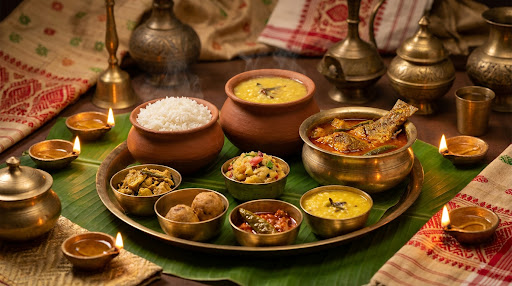
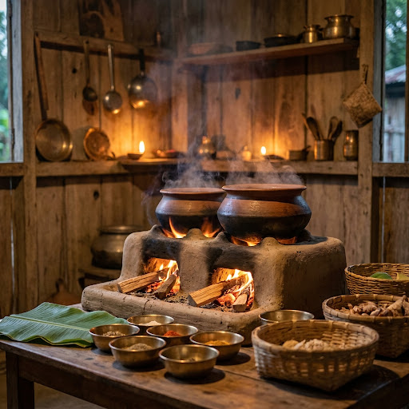
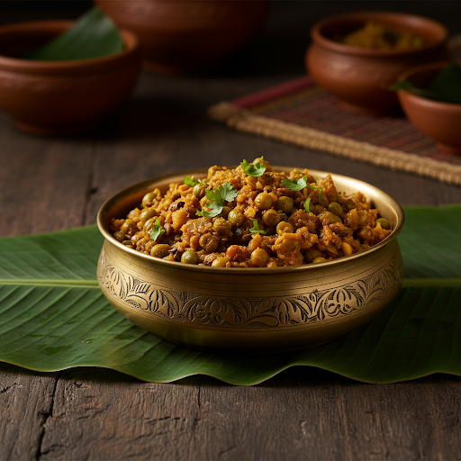
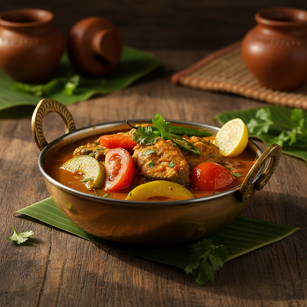
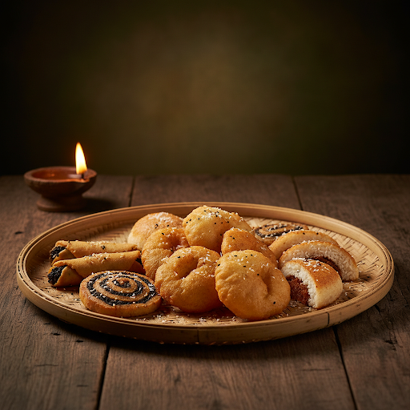

Experience the Soul of Assam
A culinary journey through the rich traditions and exquisite tastes of Assamese heritage, served with love and reverence.
Assamese cuisine is a symphony of subtle flavours, rooted in the fertile Brahmaputra valley and shaped by centuries of cultural wisdom. Unlike the heavy spices of other Indian cuisines, Assam's culinary tradition celebrates the purity of ingredients — fresh river fish, wild herbs, bamboo shoots, and the unmistakable tang of elephant apple.
At AAHAR, we honour this heritage by preserving the authentic methods passed down through generations. Every dish tells a story of festivals, family gatherings, and the warm hospitality that defines Assamese culture. From the soothing Khar that begins a meal to the sweet Pitha that ends it — each course is a chapter in Assam's culinary manuscript.


The quintessential Assamese starter — a unique alkaline preparation made with raw papaya, pulses, and filtered alkali from dried banana peel. A symbol of Assamese identity.

A tangy, aromatic fish curry simmered with tomatoes, lemon, and elephant apple. This beloved comfort dish captures the very soul of Assamese home cooking.

Delicate rice flour creations — from sesame-filled Til Pitha to coconut-stuffed Narikol Pitha. These iconic sweets are the heart of Bihu celebrations.
The festival of harvest and joy — Bihu is the heartbeat of Assamese culture. Our seasonal menus celebrate Rongali, Kongali, and Bhogali with authentic festive dishes and community feasts.
The sacred Assamese towel — a symbol of respect, hospitality, and identity. Woven with red motifs on white cotton, the Gamosa inspires our commitment to authentic warmth.
The traditional conical hat of Assam — handcrafted from bamboo and palm leaves. Jaapi symbolises the artisan spirit that defines our approach to cuisine.
Years of Heritage
Authentic Recipes
Happy Guests
Expert Chefs
"AAHAR transported me back to my grandmother's kitchen in Jorhat. The Masor Tenga was absolutely divine — authentic, soulful, and cooked with a reverence for tradition that is rare to find today."
"Every dish tells a story of Assam. The ambience, the flavours, the warmth — AAHAR is not just a restaurant, it is a cultural experience that stays with you long after the meal ends."
"The Til Pitha reminded me of Bihu celebrations back home. AAHAR captures the very essence of Assamese hospitality — like being welcomed into a loving family. Truly unforgettable."